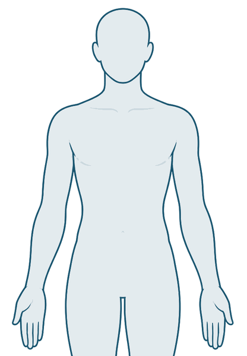

1
턱관절과 만성 통증
턱관절 장애는 다른 부위의 만성 통증과 자주 겹칩니다. 미국의 대규모 턱관절 연구(OPPERA)에서 두통, 허리 통증, 섬유근육통, 과민대장 증후군이 함께 나타나는 경우가 많았습니다. 섬유근육통이 있는 사람은 대부분 다른 만성 통증을 하나 이상 함께 갖고 있었습니다.
근거: 미국 OPPERA 연구(Slade 외, 2020)
만성 통증 MEAW턱관절 연구회
MEAW TMJ Research Society
MEAW턱관절 연구회
MEAW TMJ Research Society
턱관절 장애가 있으면 턱 통증 말고도 목 통증, 어지러움, 코골이가 함께 나타나는 경우가 많습니다. 턱관절과 이어진 전신 증상을 연구 근거와 함께 정리했습니다.
미국 국립 학술원은 2020년 보고서에서 턱관절 장애를 다른 전신 질환과 함께 올 수 있는 질환으로 정의했습니다.

턱관절 장애는 다른 부위의 만성 통증과 자주 겹칩니다. 미국의 대규모 턱관절 연구(OPPERA)에서 두통, 허리 통증, 섬유근육통, 과민대장 증후군이 함께 나타나는 경우가 많았습니다. 섬유근육통이 있는 사람은 대부분 다른 만성 통증을 하나 이상 함께 갖고 있었습니다.
근거: 미국 OPPERA 연구(Slade 외, 2020)
만성 통증턱관절 장애가 있는 사람에게는 어지러움도 흔합니다. 턱관절 장애 환자를 모아 본 분석에서 열 명 중 네 명이 어지러움을 함께 겪었습니다. 다른 원인을 찾지 못한 어지러움이 턱 증상과 함께 있다면 턱관절도 확인합니다.
근거: 체계적 문헌고찰과 메타분석(Porto De Toledo 외, 2017)
어지러움위턱은 코의 바닥이기도 해서, 위턱이 좁으면 콧속도 좁아집니다. 비염이나 축농증이 있는 사람은 턱관절 증상이 1.4~1.5배 많았고, 성인의 치열궁을 넓힌 뒤 코막힘이 줄었다는 연구가 있습니다.
근거: 국민건강영양조사(Song 외, 2018) · 성인 위턱 확장 연구 종합(Calvo-Henriquez 외, 2021)
코·비염코골이가 심하거나 자다가 숨이 멈추는 사람은 턱관절 장애가 생길 위험이 높습니다. 이런 증상이 있는 사람은 턱관절 장애가 새로 생길 위험이 약 1.7배였습니다.
근거: 미국 OPPERA 연구(Sanders 외, 2013)
코골이와 수면턱관절 장애가 있으면 목이 함께 불편한 경우가 많습니다. 연구에서는 목을 움직이는 범위가 줄어 있었고, 목의 불편이 클수록 턱의 불편도 컸습니다.
근거: 관찰 연구 종합 분석(Cuenca-Martínez 외, 2020)
목·어깨 통증허리나 목이 오래 아픈 사람에게는 턱의 증상이 더 흔합니다. 목과 어깨, 허리가 오래 아픈 사람은 47%가 턱과 얼굴의 증상을 자주 겪었습니다. 척추가 휜 청소년은 위아래 이가 엇갈려 물리는 경우가 2배가량 많았습니다.
근거: 스웨덴 환자-대조 연구(Wiesinger 외, 2007) · 척추측만증과 교합 연구 종합(Gámiz-Bermúdez 외, 2023)
자세·척추스트레스가 크면 턱관절 통증이 생기기 쉽습니다. 평소 스트레스와 정서적 긴장이 큰 사람에게서 턱관절 장애가 새로 생기는 경우가 더 많았습니다. 턱의 통증이 다시 마음의 긴장을 키우기도 해서, 턱 치료에서 스트레스 관리를 함께 다룹니다.
근거: 미국 OPPERA 연구(Fillingim 외, 2013)
스트레스턱관절 통증이 오래된 분 가운데 소화가 잘 안 되고 잠이 얕다는 분들을 자주 보게 됩니다. 식은땀을 함께 말하는 분도 있습니다. 예민해진 통증 신경이 자율신경의 긴장을 높여 이런 증상이 함께 나타날 수 있다고 봅니다.
근거: 연구회 세미나와 임상 관찰
소화 불편·얕은 잠오래된 턱관절 통증 환자는 쉴 때도 심장이 더 빨리 뛰었습니다. 턱과 얼굴의 감각을 전하는 삼차신경이 자극되면 맥박이 느려지거나 빨라지는 반사가 있습니다. 수면무호흡이 심한 사람은 잠자는 동안 부정맥(심방세동)이 약 4배 많았습니다. 두근거림이나 고르지 않은 맥박이 이어지면 내과에서 심전도를 먼저 확인합니다.
근거: 미국 OPPERA 연구(Maixner 외, 2011) · 삼차신경-심장 반사 종설(Singh·Chowdhury, 2017) · 미국 수면·심장 건강 연구(Mehra 외, 2006)
심장 박동여기 정리한 연결은 두 문제가 한 사람에게 함께 나타나는 경우가 많다는 뜻입니다. 그래서 턱관절을 진료할 때 목과 수면까지 함께 확인합니다.
소화 불편처럼 다른 장기의 증상들은 해당 진료과와 함께 확인해야 합니다.
연결의 원리로 가장 많이 연구된 설명은 두 가지입니다.
턱과 얼굴의 감각 신호는 뇌간의 한 구역으로 들어갑니다. 이 구역은 목 위쪽의 감각이 들어오는 자리와 이어져 있어 두 곳의 신호가 함께 처리됩니다. 목의 긴장이 턱 통증으로, 턱의 문제가 두통이나 목 통증으로 느껴지는 것도 이 때문입니다.
통증이 오래 이어지면 통증을 전하는 신경이 예민한 상태로 고착되기도 합니다. 그러면 약한 자극도 아프게 느끼고, 아픈 범위가 처음 자리보다 넓어지기도 합니다. 여러 부위의 만성 통증이 한 사람에게 겹쳐져 나타나는 이유 가운데 하나로 꼽힙니다.